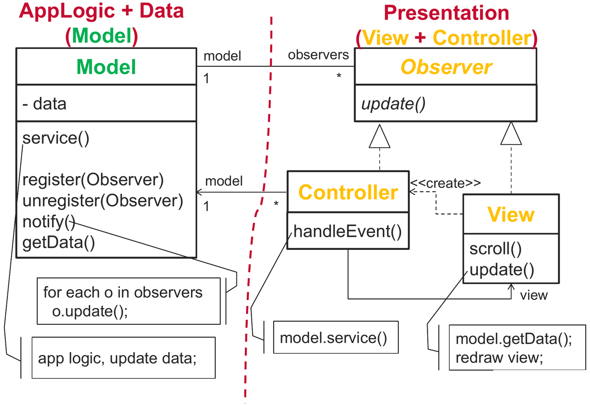
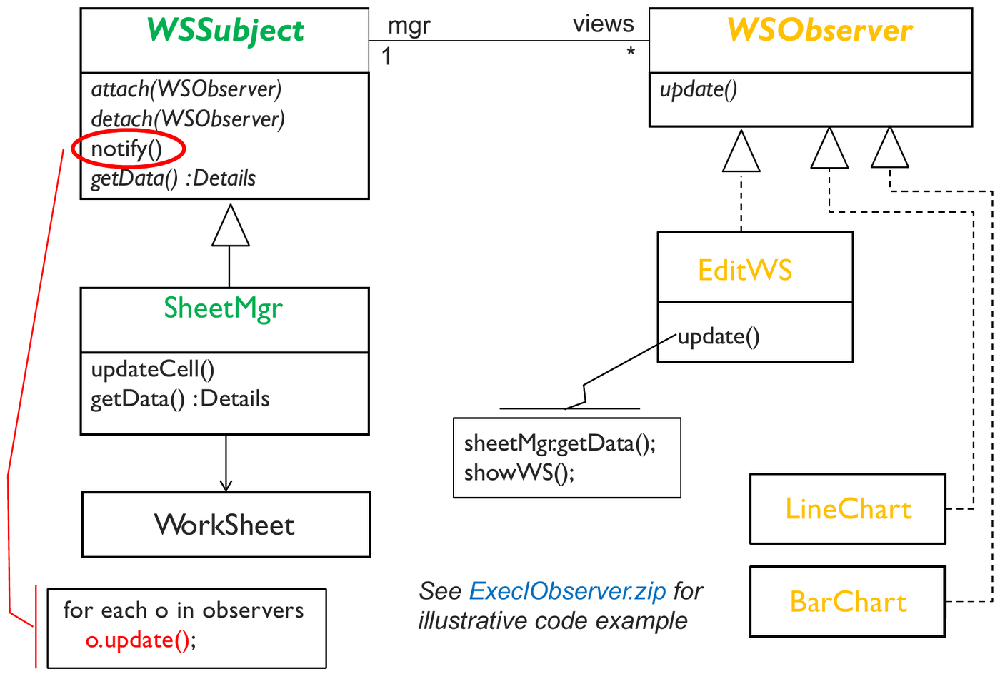
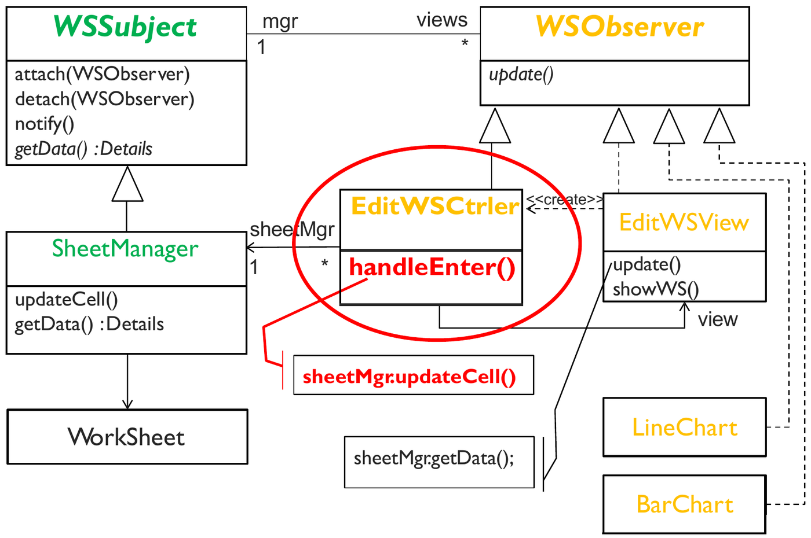

First formulated by Trygve Reenskaug for Smalltalk-80, Model-View-Controller (MVC) is an architectural pattern designed specifically for interactive graphical user interface (GUI) applications.
The fundamental objective of MVC is the complete decoupling of core business data and domain logic from the visual presentation and user input handling. By separating these concerns, multiple divergent views can display and synchronize with the same underlying data model simultaneously without code duplication or cross-layer coupling.
1. Component Responsibilities and Topology
MVC partitions an interactive software system into three cohesive components:

| Component | Primary Architectural Responsibility | Key Invariants |
|---|---|---|
| Model | Encapsulates core business data, state transitions, validation rules, and domain logic. | Completely independent of UI. Has zero compile-time references to Views or Controllers. |
| View | Renders visual graphical representations of the Model to the user and manages UI layout. | Directly queries the Model to read data. Observes Model state changes but never modifies Model data directly. |
| Controller | Intercepts user input events (keystrokes, mouse clicks, gestures) from the View, translates them into business commands, and updates the Model. | Intermediary that decouples View interaction from Model modification. Coordinates application workflow. |
2. Dynamic Interaction and Event Execution Trace
The runtime execution flow through MVC follows a disciplined five-step cyclic protocol:
[ User Action ] ──► (1) [ View ] ──► (2) [ Controller ] ──► (3) [ Model ]
▲ │
│ (4) Notification │
└───────────────────────────────────────┘- User Action: The end-user initiates an action on the interface (e.g. clicks the “Submit Order” button or edits a spreadsheet cell).
- Event Delegation: The View
captures the raw operating system event and delegates it immediately to
its associated Controller
(
controller.handleSubmitOrder()). - Model Mutation: The Controller
interprets the user input, performs preliminary input validation, and
invokes domain mutating operations on the Model
(
model.processOrder()). - State Broadcast (Observer Notification): The
Model modifies its internal state, executes business
logic, and notifies all registered Views that its state
has changed via the Observer Pattern
(
notifyObservers()). - View Refresh: Registered Views receive the update notification, query the Model’s public getters for the latest state data, and repaint their graphical displays.
3. GoF Design Patterns Embedded Inside MVC
MVC is not a single isolated pattern; it is a composite architectural pattern synthesizing three classic Gang of Four design patterns:
1. The Observer Pattern (Model View Synchronization)
The Model acts as the Subject, and every open View acts as an Observer.
- The Model maintains a list of registered Views via an abstract
IViewObserverinterface. - When Model state mutates, it broadcasts an
update()signal. - Multiple distinct Views (e.g. an Excel numeric table, a 2D Bar Chart, and a 3D Pie Chart) synchronize automatically with the same underlying Model without the Model knowing what kinds of Views are observing it.

2. The Strategy Pattern (View Controller Decoupling)
The Controller acts as the Strategy for the View:
- A View delegates user input handling to a Controller reference.
- By swapping the Controller object at runtime, the application can alter how user inputs are interpreted without modifying the View’s rendering code (e.g. swapping a touch-screen controller for a keyboard navigation controller).
3. The Composite Pattern (Nested View Hierarchy)
User interface widgets are structured as a tree of visual components:
- A top-level Window contains nested Panels, which contain Buttons, Textboxes, and Canvas widgets.
- The Composite Pattern allows the View hierarchy to treat individual visual elements and composite container panels uniformly.
4. MVC vs. Pure Layered Architecture
While a traditional Layered Architecture enforces strict top-down communication (Presentation Application Domain Database), it struggles to support real-time reactive user interfaces:

| Operational Challenge | Pure Layered Architecture | Model-View-Controller (MVC) |
|---|---|---|
| Data Synchronization | Requires Polling: The Presentation layer must periodically query the Domain layer to discover state changes, creating network and CPU overhead. | Event-Driven Push/Pull: The Model immediately broadcasts updates to Views using the Observer pattern. |
| Upward Notification | Lower layers cannot notify upper layers without violating the strict downward dependency rule. | Inverted notification is achieved cleanly through interface
polymorphism (Observer interface), maintaining zero
compile-time coupling. |
| Multiple Concurrent Views | Difficult to synchronize multiple independent screens viewing the same data in real time. | Trivial: Any number of Views can register with a single Model subject simultaneously. |